Estimation paramétrique univariée#
Import des outils / jeu de données#
1import pandas as pd
2from matplotlib import pyplot as plt
3
4from src.modelisation.univariate.non_parametric.models import create_survival_models
5from src.modelisation.univariate.parametric.models import create_models
6from src.modelisation.univariate.parametric.plot import (
7 plot_hazard_estimation,
8 plot_hazard_estimations,
9 plot_survival_estimation,
10 plot_survival_estimations,
11)
12from src.utils import init_notebook
1init_notebook()
Données#
1df = pd.read_csv(
2 "data/kickstarter_1.csv",
3 parse_dates=True,
4)
1event_times = df["day_succ"]
2event_observed = df["Status"]
3
4event_times_no_censoring = df["day_succ"][df["Status"] == 1]
5event_observed_no_censoring = df["Status"][df["Status"] == 1]
6df_video = df[df["has_video"] == 1].copy()
7df_no_video = df[df["has_video"] == 0].copy()
8
9t_video = df_video["day_succ"]
10o_video = df_video["Status"]
11
12t_no_video = df_no_video["day_succ"]
13o_no_video = df_no_video["Status"]
1models = create_models()
Fonction de survie#
Modèles paramétriques#
1plot_survival_estimations(models, event_times, event_observed)
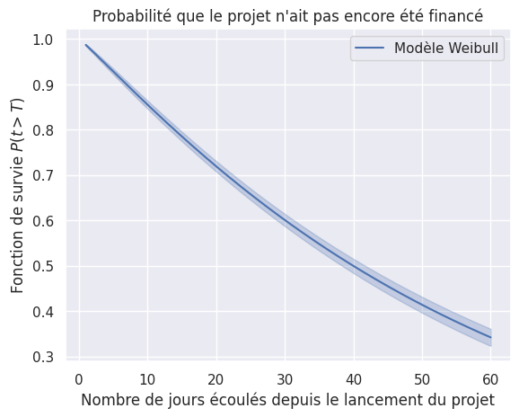
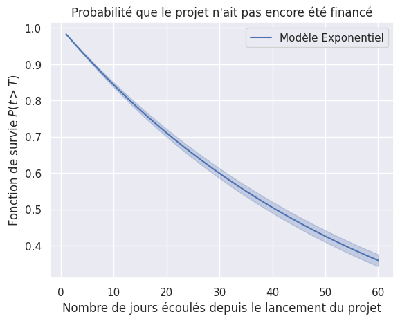
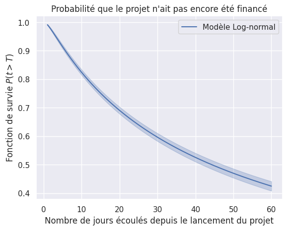
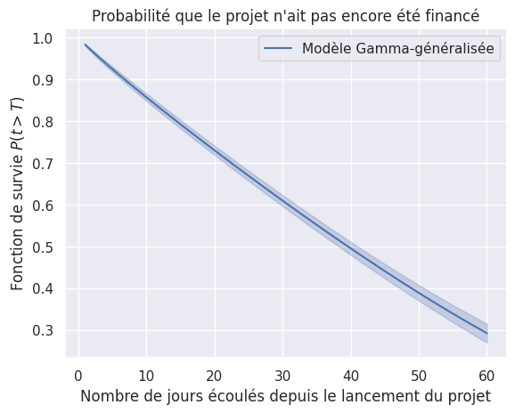
1plot_survival_estimations(models, event_times, event_observed, same_plot=True)
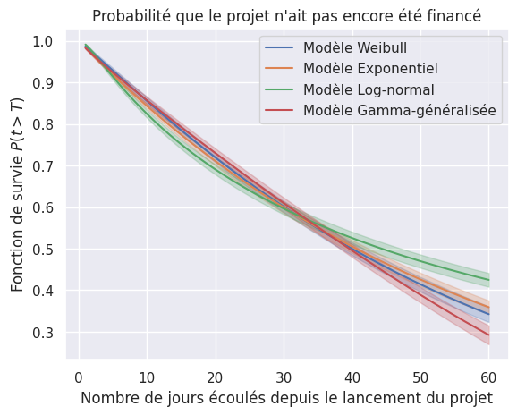
Impact de la censure#
1plot_survival_estimation(models["Weibull"], event_times, event_observed, "avec censure")
2plot_survival_estimation(
3 models["Weibull"],
4 event_times_no_censoring,
5 event_observed_no_censoring,
6 "sans censure",
7)
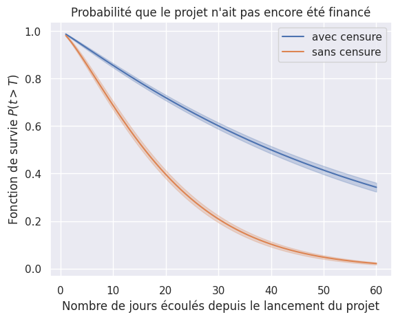
Comparaison avec modèles non-paramétriques#
1km = create_survival_models()["Kaplan-Meier"]
1plot_survival_estimation(models["Weibull"], event_times, event_observed, "Weibull")
2plot_survival_estimation(km, event_times, event_observed, "Kaplan-Meier")
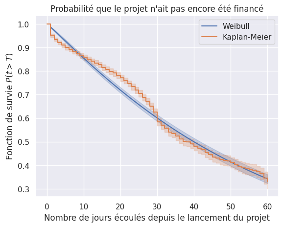
1plot_survival_estimation(
2 models["Weibull"],
3 event_times_no_censoring,
4 event_observed_no_censoring,
5 "Weibull (sans censure)",
6)
7plot_survival_estimation(
8 km,
9 event_times_no_censoring,
10 event_observed_no_censoring,
11 "Kaplan-Meier (sans censure)",
12)
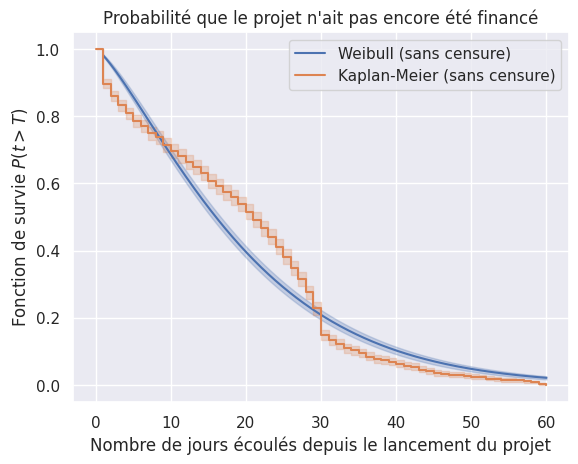
Co-variables#
Vidéo de présentation#
1plot_survival_estimation(
2 models["Weibull"], event_times, event_observed, "population complète"
3)
4plot_survival_estimation(models["Weibull"], t_video, o_video, "avec vidéo")
5plot_survival_estimation(models["Weibull"], t_no_video, o_no_video, "sans vidéo")
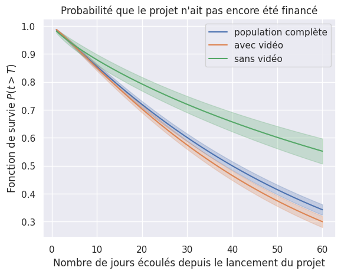
1for model in (models["Weibull"], km):
2 name = model.__class__.__name__.replace("Fitter", "")
3 plot_survival_estimation(
4 model, event_times, event_observed, f"{name} population complète"
5 )
6plt.show()
7for model in (models["Weibull"], km):
8 name = model.__class__.__name__.replace("Fitter", "")
9 plot_survival_estimation(model, t_video, o_video, f"{name} avec vidéo")
10
11
12plt.show()
13for model in (models["Weibull"], km):
14 name = model.__class__.__name__.replace("Fitter", "")
15 plot_survival_estimation(model, t_no_video, o_no_video, f"{name} sans vidéo")
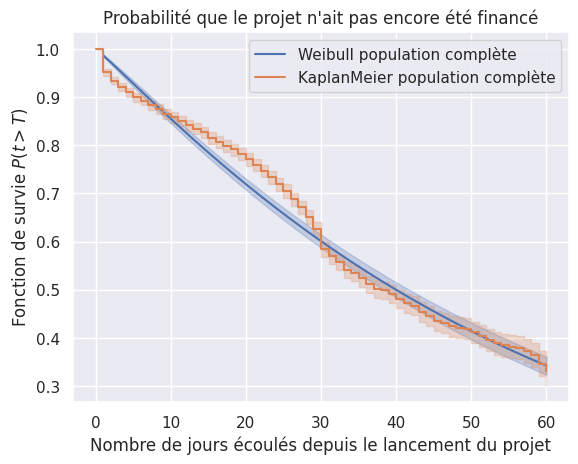
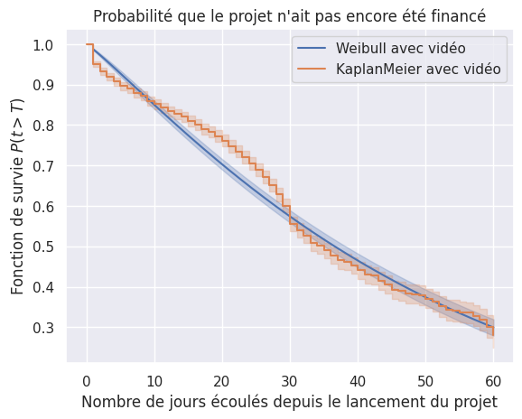
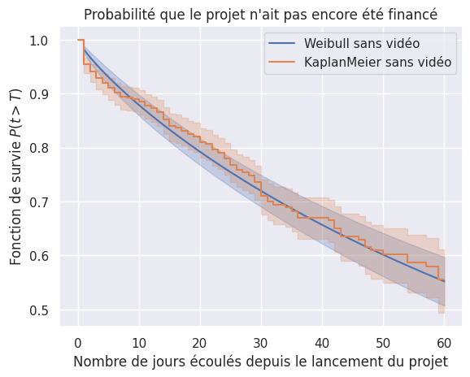
Fonction de risque#
1plot_hazard_estimations(models, event_times, event_observed)
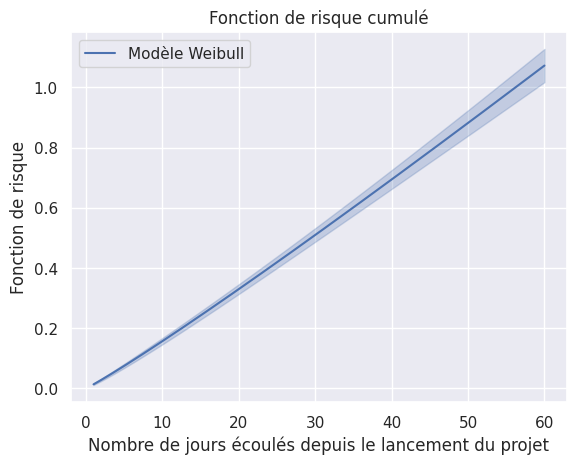
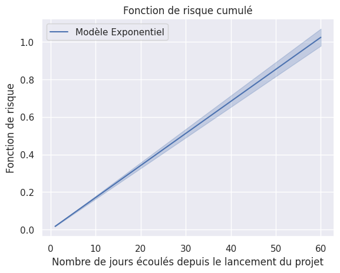
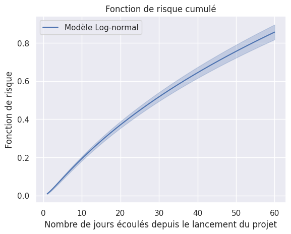
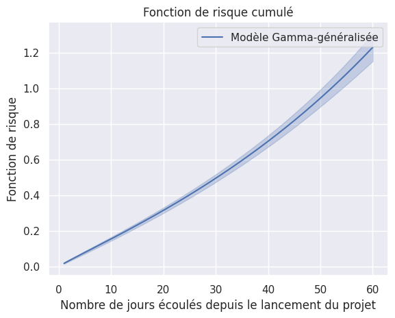
1plot_hazard_estimations(models, event_times, event_observed, same_plot=True)
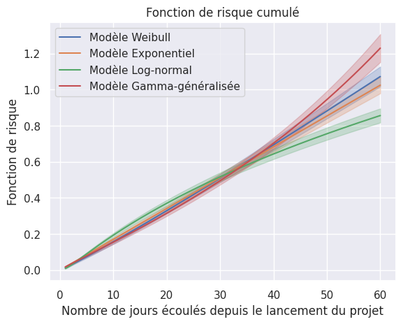
Impact de la censure#
1plot_hazard_estimation(models["Weibull"], event_times, event_observed, "avec censure")
2plot_hazard_estimation(
3 models["Weibull"],
4 event_times_no_censoring,
5 event_observed_no_censoring,
6 "sans censure",
7)
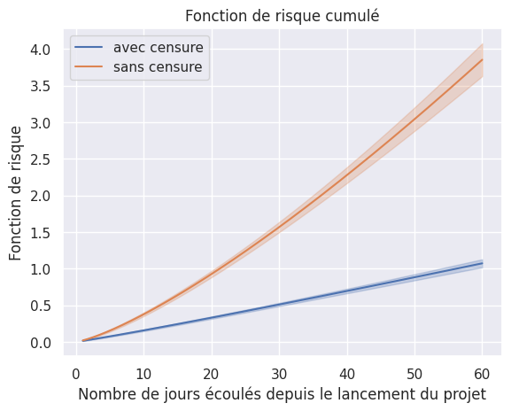
Co-variables#
Vidéo de présentation#
1plot_hazard_estimation(
2 models["Weibull"], event_times, event_observed, "population complète"
3)
4plot_hazard_estimation(models["Weibull"], t_video, o_video, "avec vidéo")
5plot_hazard_estimation(models["Weibull"], t_no_video, o_no_video, "sans vidéo")
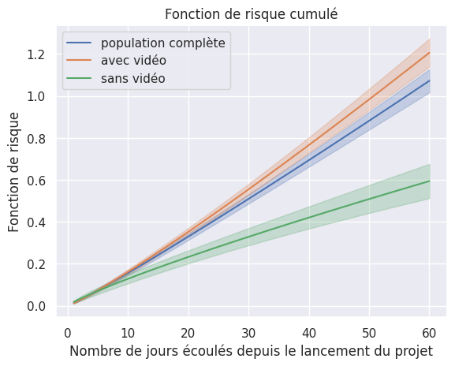